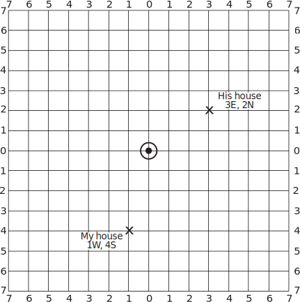
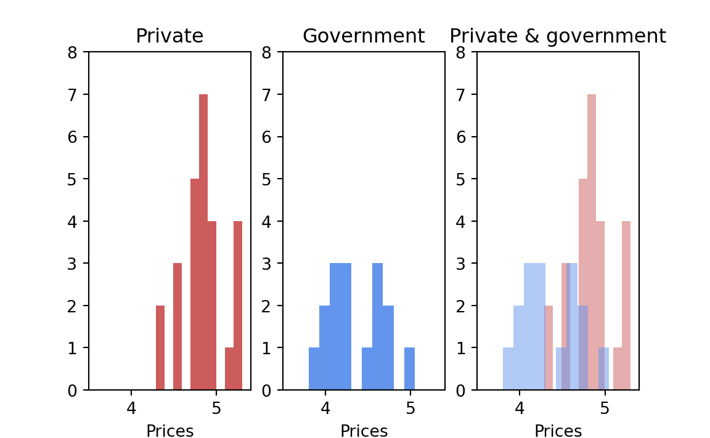
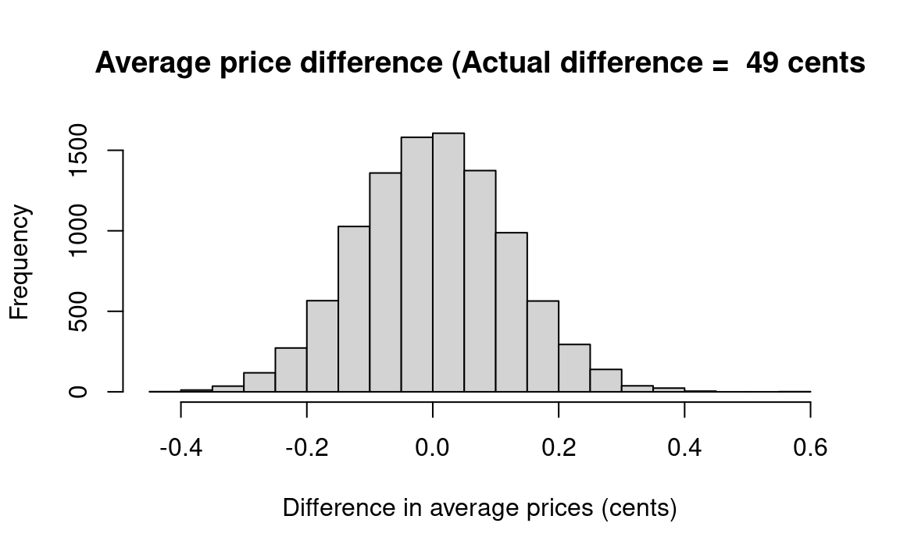

This chapter discusses problems whose appropriate concept of a universe is not finite, whereas Chapter 13 discusses problems whose appropriate concept of a universe is finite.
How can a universe be infinite yet known? Consider, for example, the possible flips with a given coin; the number is not limited in any meaningful sense, yet we understand the properties of the coin and the probabilities of a head and a tail.
12.1 Example: The Birthday Problem
This examples illustrates the probability of duplication in a multi-outcome sample from an infinite universe.
As an indication of the power and simplicity of resampling methods, consider this famous examination question used in probability courses: What is the probability that two or more people among a roomful of (say) twenty-five people will have the same birthday? To obtain an answer we need simply examine the first twenty-five numbers from the random-number table that fall between “001” and “365” (the number of days in the year), record whether or not there is a duplication among the twenty-five, and repeat the process often enough to obtain a reasonably stable probability estimate.
Pose the question to a mathematical friend of yours, then watch her or him sweat for a while, and afterwards compare your answer to hers/his. I think you will find the correct answer very surprising. It is not unheard of for people who know how this problem works to take advantage of their knowledge by making and winning big bets on it. (See how a bit of knowledge of probability can immediately be profitable to you by avoiding such unfortunate occurrences?)
More specifically, these steps answer the question for the case of twenty-five people in the room:
Step 1. Let three-digit random numbers 1-365 stand for the 365 days in the year. (Ignore leap year for simplicity.)
Step 2. Examine for duplication among the first twenty-five random numbers chosen “001-365.” (Triplicates or higher-order repeats are counted as duplicates here.) If there is one or more duplicate, record “yes.” Otherwise record “no.”
Step 3. Repeat perhaps a thousand times, and calculate the proportion of a duplicate birthday among twenty-five people.
You would probably use the computer to generate the initial random numbers.
n_with_same_birthday <-numeric(10000)# All the days of the year from "1" through "365"all_days <-1:365# Do 10000 trials (experiments)for (i in1:10000) {# Generate 25 numbers randomly between "1" and "365," put them in a. a <-sample(all_days, size=25, replace=TRUE)# Looking in a, count the number of multiples and put the result in# "counts". counts <-tabulate(a)# We request multiples > 1 because we are interested in any multiple,# whether it is a duplicate, triplicate, etc. Had we been interested only# in duplicates, we would have put in sum(counts == 2). n_duplicates <-sum(counts >1)# Score the result of each trial to our store n_with_same_birthday[i] <- n_duplicates# End the loop for the trial, go back and repeat the trial until all 10000# are complete, then proceed.}# Determine how many trials had at least one multiple.k <-sum(n_with_same_birthday)# Convert to a proportion.kk <- k /10000# Print the result.message(kk)
0.7823
End of birthday_problem notebook
We have dealt with this example in a rather intuitive and unsystematic fashion. From here on, we will work in a more systematic, step-by-step manner. And from here on the problems form an orderly sequence of the classical types of problems in probability theory (Chapter 12 and Chapter 13), and inferential statistics (Chapter 20 to Chapter 28.)
12.2 Example: Three Daughters Among Four Children
This problem illustrates a problem with two outcomes (Binomial 1) and sampling with Replacement Among Equally Likely Outcomes.
What is the probability that exactly three of the four children in a four-child family will be daughters?2
The first step is to state that the approximate probability that a single birth will produce a daughter is 50-50 (1 in 2). This estimate is not strictly correct, because there are roughly 106 male children born to each 100 female children. But the approximation is close enough for most purposes, and the 50-50 split simplifies the job considerably. (Such “false” approximations are part of the everyday work of the scientist. The appropriate question is not whether or not a statement is “only” an approximation, but whether or not it is a good enough approximation for your purposes.)
The probability that a fair coin will turn up heads is .50 or 50-50, close to the probability of having a daughter. Therefore, flip a coin in groups of four flips, and count how often three of the flips produce heads . (You must decide in advance whether three heads means three girls or three boys.) It is as simple as that.
In resampling estimation it is of the highest importance to work in a careful, step-by-step fashion — to write down the steps in the estimation, and then to do the experiments just as described in the steps. Here are a set of steps that will lead to a correct answer about the probability of getting three daughters among four children:
Step 1. Using coins, let “heads” equal “girl” and “tails” equal “boy.”
Step 2. Throw four coins.
Step 3. Examine whether the four coins fall with exactly three heads up. If so, write “yes” on a record sheet; otherwise write “no.”
Step 4. Repeat step 2 perhaps two hundred times.
Step 5. Count the proportion “yes.” This proportion is an estimate of the probability of obtaining exactly 3 daughters in 4 children.
The first few experimental trials might appear in the record sheet as follows (Table 12.1):
Table 12.1: Example trials from the three-girls problem
Number of Heads
Yes or No
1
No
0
No
3
Yes
2
No
1
No
2
No
…
…
…
…
…
…
The probability of getting three daughters in four births could also be found with a deck of cards, a random number table, a die, or with R. For example, half the cards in a deck are black, so the probability of getting a black card (“daughter”) from a full deck is 1 in 2. Therefore, deal a card, record “daughter” or “son,” replace the card, shuffle, deal again, and so forth for 200 sets of four cards. Then count the proportion of groups of four cards in which you got four daughters.
girl_counts <-numeric(10000)# Do 10000 trialsfor (i in1:10000) {# Select 'girl' or 'boy' at random, four times. children <-sample(c('girl', 'boy'), size=4, replace=TRUE)# Count the number of girls and put the result in b. b <-sum(children =='girl')# Keep track of each trial result in z. girl_counts[i] <- b# End this trial, repeat the experiment until 10000 trials are complete,# then proceed.}# Count the number of experiments where we got exactly 3 girls, and put this# result in k.n_three_girls <-sum(girl_counts ==3)# Convert to a proportion.three_girls_prop <- n_three_girls /10000# Print the results.message(three_girls_prop)
0.2392
End of three_girls notebook
Notice that the procedure outlined in the steps above would have been different (though almost identical) if we asked about the probability of three or more daughters rather than exactly three daughters among four children. For three or more daughters we would have scored “yes” on our score-keeping pad for either three or four heads, rather than for just three heads. Likewise, in the computer solution we would have used the statement n_three_girls <- sum(girl_counts >= 3).
It is important that, in this case, in contrast to what we did in the example from Section 11.2 (the introductory poker example), the card is replaced each time so that each card is dealt from a full deck. This method is known as sampling with replacement . One samples with replacement whenever the successive events are independent ; in this case we assume that the chance of having a daughter remains the same (1 girl in 2 births) no matter what sex the previous births were 3. But, if the first card dealt is black and would not be replaced, the chance of the second card being black would no longer be 26 in 52 (.50), but rather 25 in 51 (.49), if the first three cards are black and would not be replaced, the chances of the fourth card’s being black would sink to 23 in 49 (.47).
To push the illustration further, consider what would happen if we used a deck of only six cards, half (3 of 6) black and half (3 of 6) red, instead of a deck of 52 cards. If the chosen card is replaced each time, the 6-card deck produces the same results as a 52-card deck; in fact, a two-card deck would do as well. But, if the sampling is done without replacement, it is impossible to obtain 4 “daughters” with the 6-card deck because there are only 3 “daughters” in the deck. To repeat, then, whenever you want to estimate the probability of some series of events where each event is independent of the other, you must sample with replacement .
12.3 Variations of the daughters problem
In later chapters we will frequently refer to a problem which is identical in basic structure to the problem of three girls in four children — the probability of getting 9 females in ten calf births if the probability of a female birth is (say) .5 — when we set this problem in the context of the possibility that a genetic engineering practice is effective in increasing the proportion of females (desirable for the production of milk).
So far we have assumed the simple case where we have a vector of values that we are sampling from, and we are selecting each of these values into the sample with equal probability.
For example, we started with the simple assumption that a child is just as likely to be born a boy as a girl. Our input is:
input_values =c('girl', 'boy')
By default, sample will draw the input values with equal probability. Here, we draw a sample (children) of four values from the input, where each value in children has an equal chance of being “girl” or “boy”.
children <-sample(input_values, size=4, replace=TRUE)children
[1] "girl" "girl" "boy" "boy"
That is, sample gives each element in input_values an equal chance of being selected as the next element in children.
That is fine if we have some simple probability to simulate, like 0.5. But now let us imagine we want to get more precise. We happen to know that any given birth is just slightly more likely to be a boy than a girl.4. For example, the proportion of boys born in the UK is 0.513. Hence the proportion of girls is 1-0.513 = 0.487.
12.4sample and the prob argument
We could replicate this probability of 0.487 for ‘girl’ in the output sample by making an input array of 1000 strings, that contains 487 ‘girls’ and 513 ‘boys’:
big_girls <-rep(c('girl', 'boy'), c(487, 513))
Now if we sample using the default in sample, each element in the input big_girls array will have the same chance of appearing in the sample, but because there are 487 ‘girls’, and 513 ‘boys’, each with an equal chance of appearing in the sample, we will get a ‘girl’ in roughly 487 out of every 1000 elements we draw, and a boy roughly 513 / 1000 times. That is, our chance of any one element of being a ‘girl’ is, as we want, 0.487.
# Now each element has probability 0.487 of 'girl', 0.513 of 'boy'.realistic_children <-sample(big_girls, size=4, replace=TRUE)realistic_children
[1] "girl" "boy" "girl" "boy"
But, there is an easier way than compiling a big 1000 element array, and that is to use the prob= argument to sample. This allows us to specify the probability with which we will draw each of the input elements into the output sample. For example, to draw ‘girl’ with probability 0.487 and ‘boy’ with probability 0.513, we would do:
# Draw 'girl' with probability (p) 0.487 and 'boy' 0.513.children_again <-sample(c('girl', 'boy'), size=4, prob=c(0.487, 0.513),replace=TRUE)children_again
[1] "boy" "girl" "girl" "boy"
The prob argument allows us to specify the probability of each element in the input vector — so if we had three elements in the input array, we would need three probabilities in prob. For example, let’s say we were looking at some poorly-entered hospital records, we might have ‘girl’ or ‘boy’ recorded as the child’s gender, but the record might be missing — ‘not-recorded’ — with a 19% chance:
# Draw 'girl' with probability (p) 0.4, 'boy' with p=0.41, 'not-recorded' with# p=0.19.sample(c('girl', 'boy', 'not-recorded'), size=30, prob=c(0.4, 0.41, 0.19),replace=TRUE)
You might wonder how R does this trick of choosing the elements with different probabilities.
One way of doing this is to use uniform random numbers from 0 through 1. These are floating point numbers that can take any value, at random, from 0 through 1.
# Run this chunk a few times to see random numbers anywhere from 0 through 1.# `runif` means "Random UNIForm".runif(1)
[1] 0.684
Because this random uniform number has an equal chance of being anywhere in the range 0 through 1, there is a 50% chance that any given number will be less then 0.5 and a 50% chance it is greater than 0.5. (Of course it could be exactly equal to 0.5, but this is vanishingly unlikely, so we will ignore that for now).
So, if we thought girls were exactly as likely as boys, we could select from ‘girl’ and ‘boy’ using this simple logic:
if (runif(1) <0.5) { result ='girl'} else { result ='boy'}
But, by the same logic, there is a 0.487 chance that the random uniform number will be less than 0.487 and a 0.513 chance it will be greater. So, if we wanted to give ourselves a 0.487 chance of ‘girl’, we could do:
if (runif(1) <0.487) { result ='girl'} else { result ='boy'}
We can extend the same kind of logic to three options. For example, there is a 0.4 chance the random uniform number will be less than 0.4, a 0.41 chance it will be somewhere between 0.4 and 0.81, and a 0.19 chance it will be greater than 0.81.
12.5 The daughters problem with more accurate probabilities
We can use the probability argument to sample to do a more realistic simulation of the chance of a family with exactly three girls. In this case it is easy to make the chance for the R simulation, but much more difficult using physical devices like coins to simulate the randomness.
Remember, the original code for the 50-50 case, has the following:
# Select 'girl' or 'boy' at random, four times.children <-sample(c('girl', 'boy'), size=4, replace=TRUE)# Count the number of girls and put the result in b.b <-sum(children =='girl')
The only change we need to the above, for the 0.487 - 0.513 case, is the one you see above:
# Give 'girl' 48.7% of the time, 'boy' 51.3% of the time.children <-sample(c('girl', 'boy'), size=4, prob=c(0.487, 0.513),replace=TRUE)# Count the number of girls and put the result in b.b <-sum(children =='girl')
The rest of the program remains unchanged.
12.6 A note on clarifying and labeling problems
In conventional analytic texts and courses on inferential statistics, students are taught to distinguish between various classes of problems in order to decide which formula to apply. I doubt the wisdom of categorizing and labeling problems in that fashion, and the practice is unnecessary here. I consider it better that the student think through every new problem in the most fundamental terms. The exercise of this basic thinking avoids the mistakes that come from too-hasty and superficial pigeon-holing of problems into categories. Nevertheless, in order to help readers connect up the resampling material with the conventional curriculum of analytic methods, the examples presented here are given their conventional labels. And the examples given here cover the range of problems encountered in courses in probability and inferential statistics.
To repeat, one does not need to classify a problem when one proceeds with the Monte Carlo resampling method; you simply model the features of the situation you wish to analyze. In contrast, with conventional methods you must classify the situation and then apply procedures according to rules that depend upon the classification; often the decision about which rules to follow must be messy because classification is difficult in many cases, which contributes to the difficulty of choosing correct conventional formulaic methods.
12.7 Binomial trials
The problem of the three daughters in four births is known in the conventional literature as a “binomial sampling experiment with equally-likely outcomes.” “Binomial” means that the individual simple event (a birth or a coin flip) can have only two outcomes (boy or girl, heads or tails), “binomial” meaning “two names” in Latin.5
A fundamental property of binomial processes is that the individual trials are independent , a concept discussed earlier. A binomial sampling process is a series of binomial (one-of-two-outcome) events about which one may ask many sorts of questions — the probability of exactly X heads (“successes”) in N trials, or the probability of X or more “successes” in N trials, and so on.
“Equally likely outcomes” means we assume that the probability of a girl or boy in any one birth is the same (though this assumption is slightly contrary to fact); we represent this assumption with the equal-probability heads and tails of a coin. Shortly we will come to binomial sampling experiments where the probabilities of the individual outcomes are not equal.
The term “with replacement” was explained earlier; if we were to use a deck of red and black cards (instead of a coin) for this resampling experiment, we would replace the card each time a card is drawn.
The introductory poker example from Section 11.2, illustrated sampling without replacement, as will other examples to follow.
This problem would be done conventionally with the binomial theorem using probabilities of .5, or of .487 and .513, asking about 3 successes in 4 trials.
12.8 Example: Three or More Successful Basketball Shots in Five Attempts
This is an example of two-outcome sampling with unequally-likely outcomes, with replacement — a binomial experiment.
What is the probability that a basketball player will score three or more baskets in five shots from a spot 30 feet from the basket, if on the average she succeeds with 25 percent of her shots from that spot?
In this problem the probabilities of “success” or “failure” are not equal, in contrast to the previous problem of the daughters. Instead of a 50-50 coin, then, an appropriate “model” would be a thumbtack that has a 25 percent chance of landing “up” when it falls, and a 75 percent chance of landing down.
If we lack a thumbtack known to have a 25 percent chance of landing “up,” we could use a card deck and let spades equal “success” and the other three suits represent “failure.” Our resampling experiment could then be done as follows:
Let “spade” stand for “successful shot,” and the other suits stand for unsuccessful shot.
Draw a card, record its suit (“spade” or “other”) and replace. Do so five times (for five shots).
Record whether the outcome of step 2 was three or more spades. If so indicate “yes,” and otherwise “no.”
Repeat steps 2-4 perhaps four hundred times.
Count the proportion “yes” out of the four hundred throws. That proportion estimates the probability of getting three or more baskets out of five shots if the probability of a single basket is .25.
The first four repetitions on your score sheet might look like this (Table 12.2):
Table 12.2: First four repetitions of 3 or more shots simulation
Card 1
Card 2
Card 3
Card 4
Card 5
Result
Spade
Other
Other
Other
Other
No
Other
Other
Other
Other
Other
No
Spade
Spade
Other
Spade
Spade
Yes
Other
Spade
Other
Other
Spade
No
Instead of cards, we could have used two-digit random numbers, with (say) “1-25” standing for “success,” and “26-00” (“00” in place of “100”) standing for failure. Then the steps would simply be:
Let the random numbers “1-25” stand for “successful shot,” “26-00” for unsuccessful shot.
Draw five random numbers;
Count how many of the numbers are between “01” and “25.” If three or more, score “yes.”
Repeat step 2 four hundred times.
If you understand the earlier “three_girls” program, then the program below should be easy: To create 10000 samples, we start with a for statement. We then sample 5 numbers between “1” and “4” into our variable a to simulate the 5 shots, each with a 25 percent — or 1 in 4 — chance of scoring. We decide that 1 will stand for a successful shot, and 2 through 4 will stand for a missed shot, and therefore we count (sum) the number of 1’s in a to determine the number of shots resulting in baskets in the current sample. The next step is to transfer the results of each trial to vector n_baskets. We then finish the loop with the } close brace. The final step is to search the vector n_baskets, after the 10000 samples have been generated and sum the times that 3 or more baskets were made. We place the results in n_more_than_2, calculate the proportion in propo_more_than_2, and then display the result.
n_baskets <-numeric(10000)# Do 10000 experimental trials.for (i in1:10000) {# Generate 5 random numbers, each between 1 and 4, put them in "a".# Let "1" represent a basket, "2" through "4" be a miss. a <-sample(1:4, size=5, replace=TRUE)# Count the number of baskets, put that result in b. b <-sum(a ==1)# Keep track of each experiment's results in z. n_baskets[i] <- b# End the experiment, go back and repeat until all 10000 are completed, then# proceed.}# Determine how many experiments produced more than two baskets, put that# result in k.n_more_than_2 <-sum(n_baskets >2)# Convert to a proportion.prop_more_than_2 <- n_more_than_2 /10000# Print the result.message(prop_more_than_2)
0.1055
End of basketball_shots notebook
12.9 Note to the student of analytic probability theory
This problem would be done conventionally with the binomial theorem, asking about the chance of getting 3 successes in 5 trials, with the probability of a success = .25.
12.10 Example: One in Black, Two in White, No Misses in Three Archery Shots
This is an example of a multiple outcome (multinomial) sampling with unequally likely outcomes; with replacement.
Assume from past experience that a given archer puts 10 percent of his shots in the black (“bullseye”) and 60 percent of his shots in the white ring around the bullseye, but misses with 30 percent of his shots. How likely is it that in three shots the shooter will get exactly one bullseye, two in the white, and no misses? Notice that unlike the previous cases, in this example there are more than two outcomes for each trial.
This problem may be handled with a deck of three colors (or suits) of cards in proportions varying according to the probabilities of the various outcomes, and sampling with replacement. Using random numbers is simpler, however:
Step 1. Let “1” = “bullseye,” “2-7” = “in the white,” and “8-0” = “miss.”
Step 2. Choose three random numbers, and examine whether there are one “1” and two numbers “2-7.” If so, record “yes,” otherwise “no.”
Step 3. Repeat step 2 perhaps 400 times, and count the proportion of “yeses.” This estimates the probability sought.
This problem would be handled in conventional probability theory with what is known as the Multinomial Distribution.
This problem may be quickly solved on the computer using R with the notebook labeled “bullseye” below. Bullseye has a complication not found in previous problems: It tests whether two different sorts of events both happen — a bullseye plus two shots in the white.
After generating three randomly-drawn numbers between 1 and 10, we check with the sum function to see if there is a bullseye. If there is, the if statement tells the computer to continue with the operations, checking if there are two shots in the white; if there is no bullseye, the if statement tells the computer to end the trial and start another trial. A thousand repetitions are called for, the number of trials meeting the criteria are counted, and the results are then printed.
In addition to showing how this particular problem may be handled with R, the “bullseye” program teaches you some more fundamentals of computer programming. The if statement and the two loops, one within the other, are basic tools of programming.
# Make a vector to store the results of each trial.white_counts <-numeric(10000)# Do 10000 experimental trialsfor (i in1:10000) {# To represent 3 shots, generate 3 numbers at random between "1" and "10"# and put them in a. We will let a "1" denote a bullseye, "2"-"7" a shot in# the white, and "8"-"10" a miss. a <-sample(1:10, size=3, replace=TRUE)# Count the number of bullseyes, put that result in b. b <-sum(a ==1)# If there is exactly one bullseye, we will continue with counting the# other shots. (If there are no bullseyes, we need not bother — the# outcome we are interested in has not occurred.)if (b ==1) {# Count the number of shots in the white, put them in c. (Recall we are# doing this only if we got one bullseye.) c <-sum((a >=2) & (a <=7))# Keep track of the results of this second count. white_counts[i] <- c# End the "if" sequence — we will do the following steps without regard# to the "if" condition. }# End the above experiment and repeat it until 10000 repetitions are# complete, then continue.}# Count the number of occasions on which there are two in the white and a# bullseye.n_desired <-sum(white_counts ==2)# Convert to a proportion.prop_desired <- n_desired /10000# Print the results.message(prop_desired)
0.1047
End of bullseye notebook
This example illustrates the addition rule that was introduced and discussed in Chapter 9. In Section 12.10, a bullseye, an in-the-white shot, and a missed shot are “mutually exclusive” events because a single shot cannot result in more than one of the three possible outcomes. One can calculate the probability of either of two mutually-exclusive outcomes by adding their probabilities. The probability of either a bullseye or a shot in the white is .1 + .6 = .7. The probability of an arrow either in the white or a miss is .6 + .3 = .9. The logic of the addition rule is obvious when we examine the random numbers given to the outcomes. Seven of 10 random numbers belong to “bullseye” or “in the white,” and nine of 10 belong to “in the white” or “miss.”
12.11 Example: Two Groups of Heart Patients
We want to learn how likely it is that, by chance, group A would have as little as two deaths more than group B — Table 12.3:
Table 12.3: Two Groups of Heart Patients
Live
Die
Group A
79
11
Group B
21
9
This problem, phrased here as a question in probability, is the prototype of a problem in statistics that we will consider later (which the conventional theory would handle with a “chi square distribution”). We can handle it in either of two ways, as follows:
Approach A
Put 120 balls into a bucket, 100 white (for live) and 20 black (for die).
Draw 30 balls randomly and assign them to Group B; the others are assigned to group A.
Count the numbers of black balls in the two groups and determine whether Group A’s excess “deaths” (= black balls), compared to Group B, is two or fewer (or what is equivalent in this case, whether there are 11 or fewer black balls in Group A); if so, write “Yes,” otherwise “No.”
Repeat steps 2 and 3 perhaps 10000 times and compute the proportion “Yes.”
A second way we shall think about this sort of problem may be handled as follows:
Approach B
Put 120 balls into a bucket, 100 white (for live) and 20 black (for die) (as before).
Draw balls one by one, replacing the drawn ball each time, until you have accumulated 90 balls for Group A and 30 balls for Group B. (You could, of course, just as well use a bucket for 4 white and 1 black balls or 8 white and 2 black in this approach.)
As in approach “A” above, count the numbers of black balls in the two groups and determine whether Group A’s excess deaths is two or fewer; if so, write “Yes,” otherwise “No.”
As above, repeat steps 2 and 3 perhaps 10000 times and compute the proportion “Yes.”
We must also take into account the possibility of a similar eye-catching “unbalanced” result of a much larger proportion of deaths in Group B. It will be a tough decision how to do so, but a reasonable option is to simply double the probability computed in step 4a or 4b.
Deciding which of these two approaches — the “permutation” (without replacement) and “bootstrap” (with replacement) methods — is the more appropriate is often a thorny matter; it will be discussed latter in Chapter 24. In many cases, however, the two approaches will lead to similar results.
Later, we will actually carry out these procedures with the aid of R, and estimate the probabilities we seek.
12.12 Example: Dispersion of a Sum of Random Variables — Hammer Lengths — Heads and Handles
The distribution of lengths for hammer handles is as follows: 20 percent are 10 inches long, 30 percent are 10.1 inches, 30 percent are 10.2 inches, and 20 percent are 10.3 inches long. The distribution of lengths for hammer heads is as follows: 2.0 inches, 20 percent; 2.1 inches, 20 percent; 2.2 inches, 30 percent; 2.3 inches, 20 percent; 2.4 inches, 10 percent.
If you draw a handle and a head at random, what will be the mean total length? In Chapter 9 we saw that the conventional formulaic method tells you that an answer with a formula that says the sum of the means is the mean of the sums, but it is easy to get the answer with simulation. But now we ask about the dispersion of the sum. There are formulaic rules for such measures as the variance. But consider this other example: What proportion of the hammers made with handles and heads drawn at random will have lengths equal to or greater than 12.4 inches? No simple formula will provide an answer. And if the number of categories is increased considerably, any formulaic approach will be become burdensome if not undoable. But Monte Carlo simulation produces an answer quickly and easily, as follows:
Fill a bucket with:
2 balls marked “10” (inches),
3 balls marked “10.1”,
3 marked “10.2”, and
2 marked “10.3”.
This bucket represents the handles.
Fill another bucket with:
2 balls marked “2.0”,
2 balls marked “2.1”,
3 balls marked “2.2”,
2 balls marked “2.3” and
1 ball marked “2.4”.
This bucket represents the heads.
Pick a ball from each of the “handles” and “heads” bucket, calculate the sum, and replace the balls.
Repeat perhaps 200 times (more when you write a computer program), and calculate the proportion of the sums that are greater than 12.4 inches.
You may also want to forego learning the standard “rule,” and simply estimate the mean this way, also. As an exercise, compute the interquartile range — the difference between the 25th and the 75th percentiles.
12.13 Example: The Product of Random Variables — Theft by Employees
The distribution of the number of thefts per month you can expect in your business is as follows:
Number
Probability
0
0.5
1
0.2
2
0.1
3
0.1
4
0.1
The amounts that may be stolen on any theft are as follows:
Amount
Probability
$50
0.4
$75
0.4
$100
0.1
$125
0.1
The same procedure as used above to estimate the mean length of hammers — add the lengths of handles and heads — can be used for this problem except that the results of the drawings from each bucket are multiplied rather than added.
In this case there is again a simple rule: The mean of the products equals the product of the means. But this rule holds only when the two urns are indeed independent of each other, as they are in this case.
The next two problems are a bit harder than the previous ones; you might skip them for now and come back to them a bit later. However, with the Monte Carlo simulation method they are within the grasp of any introductory student who has had just a bit of experience with the method. In contrast, a standard book whose lead author is Frederick Mosteller, as respected a statistician as there is, says of this type of problem: “Naturally, in this book we cannot expect to study such difficult problems in their full generality [that is, show how to solve them, rather than merely state them], but we can lay a foundation for their study.” (Mosteller, Rourke, and Thomas 1961, 5)
12.14 Example: Flipping Pennies to the End
Two players, each with a stake of ten pennies, engage in the following game: A coin is tossed, and if it is (say) heads, player A gives player B a penny; if it is tails, player B gives player A a penny. What is the probability that one player will lose his or her entire stake of 10 pennies if they play for 200 tosses?
This is a classic problem in probability theory; it has many everyday applications in situations such as inventory management. For example, what is the probability of going out of stock of a given item in a given week if customers and deliveries arrive randomly? It also is a model for many processes in modern particle physics.
Solution of the penny-matching problem with coins is straightforward. Repeatedly flip a coin and check if one player or the other reaches a zero balance before you reach 200 flips. Or with random numbers:
Proceed down a series of 200 numbers, keeping a running tally of the “+1”’s and the “-1”’s. If the tally reaches “+10” or “-10” on or before the two-hundredth digit, record “yes”; otherwise record “no.”
Repeat step 2 perhaps 400 or 10000 times, and calculate the proportion of “yeses.” This estimates the probability sought.
The following R program also solves the problem. The heart of the program starts at the line where the program models a coin flip with the statement: c = sample(1:2, size=1) After you study that, go back and notice the inner for loop starting with for (j in 1:200) { that describes the procedure for flipping a coin 200 times. Finally, note how the outer for (i in 1:10000) { loop simulates 10000 games, each game consisting of the 200 coin flips we generated with the inner for loop above.
someone_won <-numeric(10000)# Do 10000 trialsfor (i in1:10000) {# Record the number 10: a's stake a_stake <-10# Same for b b_stake <-10# An indicator flag that will be set to "1" when somebody wins. flag <-0# Repeat the following steps 200 times.# Notice we use "j" as the counter variable, to avoid overwriting# "i", the counter variable for the 10000 trials.for (j in1:200) {# Generate the equivalent of a coin flip, letting 1 <- heads,# 2 <- tails c <-sample(1:2, size=1)# If it's a headsif (c ==1) {# Add 1 to b's stake b_stake <- b_stake +1# Subtract 1 from a's stake a_stake <- a_stake -1# End the "if" condition }# If it's a tailsif (c ==2) {# Add one to a's stake a_stake <- a_stake +1# Subtract 1 from b's stake b_stake <- b_stake -1# End the "if" condition }# If a has wonif (a_stake ==20) {# Set the indicator flag to 1 flag <-1 }# If b has wonif (b_stake ==20) {# Set the indicator flag to 1 flag <-1 }# End the repeat loop for 200 plays (note that the indicator flag stays# at 0 if neither a nor b has won) }# Keep track of whether anybody won. someone_won[i] <- flag# End the 10000 trials}# Find out how often somebody wonn_wins <-sum(someone_won)# Convert to a proportionprop_wins <- n_wins /10000# Print the resultsmessage(prop_wins)
0.8919
End of pennies notebook
A similar example: Your warehouse starts out with a supply of twelve capacirators. Every three days a new shipment of two capacirators is received. There is a .6 probability that a capacirator will be used each morning, and the same each afternoon. (It is as if a random drawing is made each half-day to see if a capacirator is used; two capacirators may be used in a single day, or one or none). How long will be it, on the average, before the warehouse runs out of stock?
12.15 Example: A Drunk’s Random Walk
If a drunk chooses the direction of each step randomly, will he ever get home? If he can only walk on the road on which he lives, the problem is almost the same as the gambler’s-ruin problem above (“pennies”). But if the drunk can go north-south as well as east-west, the problem becomes a bit different and interesting.
Looking now at Figure 12.1 — what is the probability of the drunk reaching either his house (at 3 steps east, 2 steps north) or my house (1 west, 4 south) before he finishes taking twelve steps?
One way to handle the problem would be to use a four-directional spinner such as is used with a child’s board game, and then keep track of each step on a piece of graph paper. The reader may construct a R program as an exercise.

Figure 12.1: Drunk random walk
12.16 Example: public and private liquor pricing
Let’s end this chapter with an actual example that will be used again in Chapter 13 when discussing probability in finite universes, and then at great length in the context of statistics in Chapter 24. This example also illustrates the close connection between problems in pure probability and those in statistical inference.
As of 1963, there were 26 U.S. states in whose liquor systems the retail liquor stores are privately owned, and 16 “monopoly” states where the state government owns the retail liquor stores. (Some states were omitted for technical reasons.) These were the representative 1961 prices of a fifth of Seagram 7 Crown whiskey in the two sets of states (Table 12.4):
Table 12.4: Whiskey prices by state category
Private
Government
4.82
4.65
5.29
4.55
4.89
4.11
4.95
4.15
4.55
4.2
4.9
4.55
5.25
3.8
5.3
4.0
4.29
4.19
4.85
4.75
4.54
4.74
4.75
4.5
4.85
4.1
4.85
4.0
4.5
5.05
4.75
4.2
4.79
4.85
4.79
4.95
4.95
4.75
5.2
5.1
4.8
4.29
Count
26
16
Mean
4.84
4.35

Figure 12.2: Whiskey prices by state category
Let us consider that all these states’ prices constitute one single universe (an assumption whose justification will be discussed later). If so, one can ask: If these 42 states constitute a single universe, how likely is it that one would choose two samples at random, containing 16 and 26 observations, that would have prices as different as $.49 (the difference between the means that was actually observed)?
This can be thought of as problem in pure probability because we begin with a known universe and ask how it would behave with random drawings from it. We sample with replacement ; the decision to do so, rather than to sample without replacement (which is the way I had first done it, and for which there may be better justification) will be discussed later. We do so to introduce a “bootstrap”-type procedure (defined later) as follows: Write each of the forty-two observed state prices on a separate card. The shuffled deck simulated a situation in which each state has an equal chance for each price. Repeatedly deal groups of 16 and 26 cards, replacing the cards as they are chosen, to simulate hypothetical monopoly-state and private-state samples. For each trial, calculate the difference in mean prices.
These are the steps systematically:
Step A: Write each of the 42 prices on a card and shuffle.
Steps B and C (combined in this case): i) Draw cards randomly with replacement into groups of 16 and 26 cards. Then ii) calculate the mean price difference between the groups, and iii) compare the simulation-trial difference to the observed mean difference of $4.84 - $4.35 = $.49; if it is as great or greater than $.49, write “yes,” otherwise “no.”
Step D: Repeat step B-C a hundred or a thousand times. Calculate the proportion “yes,” which estimates the probability we seek.
The probability that the postulated universe would produce a difference between groups as large or larger than observed in 1961 is estimated by how frequently the mean of the group of randomly-chosen sixteen prices from the simulated state-ownership universe is less than (or equal to) the mean of the actual sixteen state-ownership prices. The following notebook performs the operations described above.
fake_diffs <-numeric(10000)priv <-c(4.82, 5.29, 4.89, 4.95, 4.55, 4.90, 5.25, 5.30, 4.29, 4.85, 4.54,4.75, 4.85, 4.85, 4.50, 4.75, 4.79, 4.85, 4.79, 4.95, 4.95, 4.75,5.20, 5.10, 4.80, 4.29)govt <-c(4.65, 4.55, 4.11, 4.15, 4.20, 4.55, 3.80, 4.00, 4.19, 4.75, 4.74,4.50, 4.10, 4.00, 5.05, 4.20)actual_diff <-mean(priv) -mean(govt)# Join the two vectors of databoth <-c(priv, govt)# Repeat 10000 simulation trialsfor (i in1:10000) {# Sample 26 with replacement for private group fake_priv <-sample(both, size=26, replace=TRUE)# Sample 16 with replacement for govt. group fake_govt <-sample(both, size=16, replace=TRUE)# Find the mean of the "private" group. p <-mean(fake_priv)# Mean of the "govt." group g <-mean(fake_govt)# Difference in the means diff <- p - g# Keep score of the trials fake_diffs[i] <- diff}# Graph of simulation results to compare with the observed result.fig_title <-paste('Average price difference (Actual difference = ',round(actual_diff *100),'cents')hist(fake_diffs, main=fig_title, xlab='Difference in average prices (cents)')

End of liquor_prices notebook
The results shown above — not even one “success” in 10,000 trials — imply that there is only a very small probability that two groups with mean prices as different as were observed would happen by chance if drawn with replacement from the universe of 42 observed prices.
Here we think of these states as if they came from a non-finite universe, which is one possible interpretation for one particular context. However, in Chapter 13 we will postulate a finite universe, which is appropriate if it is reasonable to consider that these observations constitute the entire universe (aside from those states excluded from the analysis because of data complexities).
12.17 The general procedure
Chapter 25 generalizes what we have done in the probability problems above into a general procedure, which will in turn be a subpart of a general procedure for all of resampling.
Arbuthnot, John. 1710. “An Argument for Divine Providence, Taken from the Constant Regularity Observ’d in the Births of Both Sexes. By Dr. John Arbuthnott, Physitian in Ordinary to Her Majesty, and Fellow of the College of Physitians and the Royal Society.”Philosophical Transactions of the Royal Society of London 27 (328): 186–90. https://royalsocietypublishing.org/doi/pdf/10.1098/rstl.1710.0011.